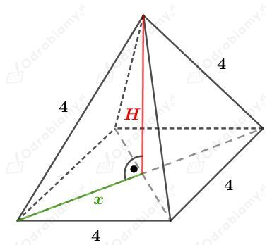
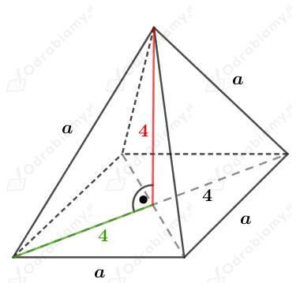
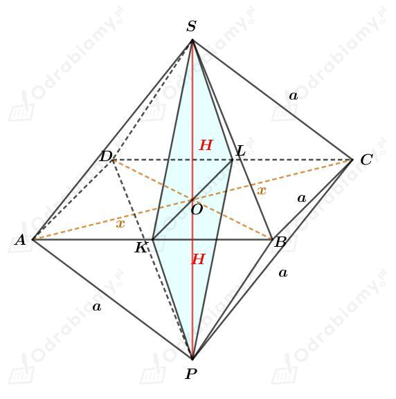

W podręczniku (powyżej treści zadania) przedstawiono na rysunku siatki wielościanów foremnych. Na podstawie tych siatek, uzupełnijmy tabelę:
| Wielościan foremny | Liczba ścian | Liczba krawędzi | Liczba wierzchołków |
| czworościan | | | |
| sześcian | | | |
| ośmiościan | | | |
| dwunastościan | | | |
| dwudziestościan | | | |
Przypomnijmy wzór Eulera:
| Wzór Eulera Dla dowolnego wielościanu wypukłego zachodzi zależność opisana tzw. wzorem Eulera: gdzie s oznacza liczbę ścian, k - liczbę krawędzi, w - liczbę wierzchołków. |
Sprawdzimy prawdziwość wzoru Eulera dla wielościanów foremnych.
1) Dla czworościanu foremnego mamy:
Zatem dla czworościanu foremnego wzór Eulera jest spełniony.
2) Dla sześcianu mamy:
Zatem dla sześcianu wzór Eulera jest spełniony.
3) Dla ośmiościanu foremnego mamy:
Zatem dla ośmiościanu foremnego wzór Eulera jest spełniony.
4) Dla dwunastościanu foremnego mamy:
Zatem dla dwunastościanu foremnego wzór Eulera jest spełniony.
5) Dla dwudziestościanu foremnego mamy:
Zatem dla dwudziestościanu foremnego wzór Eulera jest spełniony.
Dany jest ośmiościan foremny o krawędzi długości 4 cm.
Ośmiościan foremny ma osiem ścian będących trójkątami równobocznymi.
Wyznaczmy pole powierzchni całkowej tego ośmiościanu. Mamy:
Ośmiościan foremny to dwa ostrosłupy czworokątne prawidłowe sklejone podstawami.
Naszkicujmy jeden taki ostrosłup. Mamy:

Odcinek x jest połową przekątnej kwadratu o boku długości 4, więc:
Korzystając z twierdzenia Pitagorasa mamy:
Objętość V ośmiościanu foremnego to podwojona objętość V1 ostrosłupa prawidłowego czworokątnego. Mamy więc:
Ośmiościan foremny to dwa sklejone ze sobą podstawami ostrosłupy prawidłowe czworokątne.
Długość przekątnej podstawy tego ostrosłupa jest równa długości krawędzi sześcianu, czyli jest równa 8 cm.
Długość wysokości tego ostrosłupa jest połową długości krawędzi sześcianu, czyli jest równa 4 cm.
Rysunek tego ostrosłupa:

Korzystając ze wzoru na długość przekątnej kwadratu mamy:
Ośmiościan foremny ma osiem ścian będących trójkątami równobocznymi o boku długości 4√2 cm.
Wyznaczmy pole powierzchni całkowej tego ośmiościanu. Korzystając ze wzoru na pole trójkąta równobocznego mamy:
Objętość V ośmiościanu foremnego to podwojona objętość V1 ostrosłupa prawidłowego czworokątnego. Mamy więc:
Rysunek:

Przekątna rombu KL ma taką samą długość jak krawędź tego ośmiościanu, więc |KL|=a.
Natomiast druga przekątna PS jest dwa razy dłuższa od wysokości ostrosłupa ABCDS, czyli |PS|=2H.
Rozpatrzmy trójkąt AOS. Odcinek x stanowi połowę długości przekątnej kwadratu ABCD, czyli
Korzystając z twierdzenia Pitagorasa dla trójkąta AOS mamy:
Wiemy, że pole tego rombu jest równe 18√2 cm2, czyli otrzymujemy:
Ośmiościan ma 12 krawędzi równej długości. Wyznaczmy sumę S ich długości. Mamy: